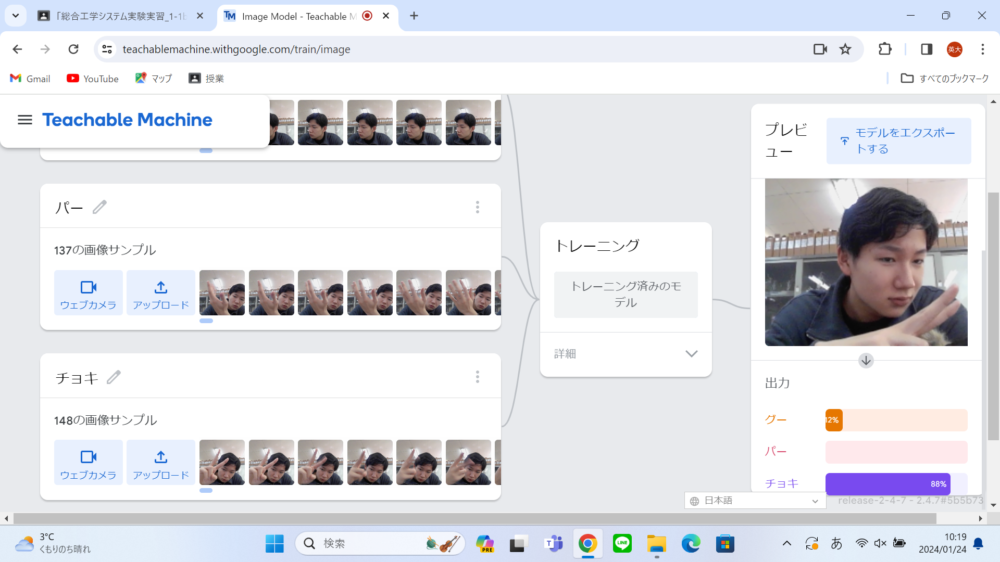

第2週目
2-1 １週目のレポートをHTMLで作る
１週目のレポート
1.内容
1週目に行った実習のホームページ作成・ゲームの内容などについて書いた．
2.感想
htmlで作ったときには，自分たちが書くところは大体決まっていてほとんど完成されていたが周りを見るといろいろな単語がありごちゃごちゃしていて
厄介だなと思っていた．
2-2 機械学習体験

1.内容
グー・チョキ・パーの名前を付けてそれに対応される写真を150枚程度撮りそれでカメラで映る写真を見て機械がグー．チョキ・パーを判断する．
2.感想
チョキが左手でカメラの下のほうじゃないと認識されなかったので写真の撮り方がよくなかったのかなと思った．チョキの写真をもうちょっと真ん中よりに
撮影をすればよかった．グー・パーはうまく行けた．
2-3 VR（バーチャルリアリティー：Virtual Reality）会議室の体験
1.内容
ミラーリングをして，会議室に入りネットワーク上で黒板に絵を描いたりした．
2.感想
会議のなかで人がいるほうから声が聞こえたりして，すごかった．みんなが絵を描いているのがリアルタイムで見れて面白かった．しかし，VRを長い時間していると
楽しいが酔ってしまう．